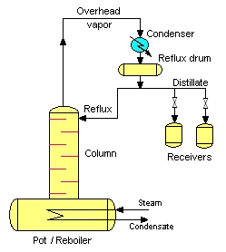

Destilación por lotes
Operación discontinua de destilación: alambique simple, ecuación de Rayleigh, destilación rectificada por lotes, los «cortes» de la destilería artesanal y comparación con la destilación continua.
La destilación continua (Lectura 13) no es siempre la respuesta: cuando los volúmenes son pequeños, cuando la mezcla cambia de lote a lote, o cuando se requiere una flexibilidad operacional que la columna continua no puede proveer, la destilación por lotes, también llamada destilación discontinua o destilación simple, es la alternativa natural. Es, además, la técnica más antigua: el alambique de cobre del que nació el whisky, el coñac y el ron de alta gama no es sino una destilación por lotes mejorada.

La destilación por lotes es relevante cuando la planta opera a escala piloto o cuando los volúmenes de etanol a recuperar son pequeños (inicio de producción, pruebas de proceso). Comprender la ecuación de Rayleigh permite estimar cuánto etanol se puede recuperar en cada lote y con qué pureza promedio, sin necesidad de diseñar una columna completa.
1. Destilación simple por lotes (alambique)
En la destilación simple por lotes, una carga inicial de mezcla líquida se coloca en el caldero (pot still) y se calienta. El vapor generado en cada instante está en equilibrio con el líquido en ese instante. A diferencia de la destilación continua, el sistema cambia con el tiempo: a medida que el componente más volátil se evapora, el líquido en el caldero se empobrece en ese componente, y el destilado que se produce se vuelve progresivamente menos puro.
Características operacionales
- Carga inicial: \(L_0\) mol de líquido con composición \(x_0\) (fracción del componente volátil).
- Residuo final: \(L_W\) mol a composición \(x_W\).
- Destilado acumulado: \(D = L_0 - L_W\) mol con composición promedio \(\bar{y}\) (varía con el tiempo).
- En cada instante \(t\), el destilado tiene composición \(y^*(x)\), donde \(y^*\) es la composición de equilibrio correspondiente al líquido de composición \(x\) en el caldero.
Comparación con la destilación continua
| Característica | Por lotes (discontinua) | Continua |
|---|---|---|
| Régimen de operación | Transitorio: composiciones cambian con el tiempo | Estado estacionario: composiciones constantes |
| Flexibilidad | Alta: un mismo equipo procesa diferentes mezclas | Baja: diseñada para un sistema y especificaciones fijas |
| Escala | Pequeña a mediana (destilerías artesanales, laboratorio, piloto) | Mediana a grande (industria química, refinería) |
| Calidad del destilado | Varía con el tiempo; requiere recorte de fracciones | Constante si la alimentación y la operación son estables |
| Consumo energético | Mayor por unidad de producto (sin recuperación interna de calor) | Menor (calor latente de la columna se aprovecha internamente) |
2. Ecuación de Rayleigh
Derivación
Sea \(L\) el número de moles de líquido en el caldero en un instante dado y \(x\) su composición. Si se evapora una cantidad infinitesimal \(-dL\) (negativo porque L decrece), el vapor instantáneo tiene composición de equilibrio \(y^*(x)\). El balance diferencial de componente volátil es:
$$d(Lx) = y^* \cdot (-dL)$$ $$L \, dx + x \, dL = -y^* \, dL$$ $$L \, dx = -(y^* - x) \, dL$$ $$\frac{dL}{L} = -\frac{dx}{y^* - x}$$Integrando desde el estado inicial \((L_0, x_0)\) al estado final \((L_W, x_W)\) con \(x_0 > x_W\):
$$\ln\!\left(\frac{L_0}{L_W}\right) = \int_{x_W}^{x_0} \frac{dx}{y^*(x) - x}$$Esta es la ecuación de Rayleigh. La integral se puede evaluar numéricamente (cuadratura) si se conoce la curva de equilibrio \(y^* = f(x)\), o analíticamente para el caso de mezcla ideal con volatilidad relativa constante \(\alpha\). Con \(y^* = \dfrac{\alpha x}{1+(\alpha-1)x}\) se obtiene:
$$y^* - x = \frac{(\alpha - 1)\,x\,(1-x)}{1 + (\alpha-1)x}$$El integrando \(\dfrac{1}{y^*-x}\) se descompone en fracciones parciales como \(\dfrac{1}{\alpha-1}\left(\dfrac{1}{x} + \dfrac{\alpha}{1-x}\right)\); integrando entre \(x_W\) y \(x_0\) resulta la forma cerrada:
$$\ln\!\left(\frac{L_0}{L_W}\right) = \frac{1}{\alpha-1}\left[\ln\!\frac{x_0}{x_W} - \alpha\ln\!\frac{1-x_0}{1-x_W}\right]$$que de forma equivalente puede escribirse \(\ln\!\left(\dfrac{L_0}{L_W}\right) = \dfrac{1}{\alpha-1}\ln\!\left[\dfrac{x_0}{x_W}\left(\dfrac{1-x_W}{1-x_0}\right)^{\!\alpha}\right]\). Esta expresión analítica coincide exactamente con la cuadratura numérica que emplea la calculadora de abajo.
Balance de componente para el destilado
La composición promedio del destilado acumulado \(\bar{y}\) se obtiene del balance global:
$$L_0 x_0 = L_W x_W + D \bar{y}$$ $$\bar{y} = \frac{L_0 x_0 - L_W x_W}{L_0 - L_W}$$Calculadora Rayleigh: mezcla binaria ideal
Dado α constante, composición inicial x₀ y composición final deseada xW en el caldero, calcula la fracción de líquido remanente LW/L₀ y la composición promedio del destilado.
Requiere xW < x₀. Use integración numérica (cuadratura de Simpson) de la ecuación de Rayleigh con α constante; el resultado coincide con la forma cerrada analítica de arriba.
Ejemplo resuelto: ecuación de Rayleigh
La ecuación de Rayleigh describe la destilación simple de una sola etapa de equilibrio (alambique sin columna ni reflujo). Supone que en todo instante el vapor que sale está en equilibrio con el líquido del caldero, que la retención de vapor es despreciable y, en su forma cerrada, que \(\alpha\) es constante en todo el rango de composición. Para columnas con reflujo (sección 3) deja de aplicar: allí el destilado es mucho más rico que \(y^*\) del caldero y se requiere el análisis multietapa.
3. Destilación rectificada por lotes
La destilación simple por lotes entrega destilado de pureza moderada (limitada a la curva de equilibrio de una etapa). Para obtener purezas más altas, como el licor espirituoso de alta graduación, se usa una columna de rectificación (batch column) colocada encima del caldero: un relleno o platos que permiten múltiples contactos vapor-líquido durante el mismo lote.
Modos de operación
| Modo | Variable de control | Descripción | Resultado |
|---|---|---|---|
| R constante (reflujo fijo) | \(R = L/D = \) constante | Se mantiene la razón de reflujo fija durante todo el lote | La pureza del destilado cae con el tiempo conforme el caldero se empobrece. Se recolectan fracciones para uso diferenciado. |
| yD constante (pureza fija) | \(y_D = \) constante | Se aumenta el reflujo durante el lote para mantener la pureza del destilado | El caudal de destilado disminuye con el tiempo. Es más productivo si la especificación de pureza es estricta. |
Ventajas de la rectificación por lotes
- Permite obtener destilados de alta pureza (>90 % v/v alcohol) en un solo equipo.
- Flexibilidad para procesar diferentes mezclas en el mismo equipo.
- Posibilidad de recolectar fracciones de composición diferente a lo largo del lote.
- Menor costo de capital que una columna continua equivalente a pequeña escala.
Un alambique simple (pot still sin columna) produce destilados de 20-30 % ABV en una sola pasada, por lo que se necesitan varias destilaciones sucesivas para alcanzar 60-70 % ABV. Un alambique equipado con una columna de platos puede producir, en una sola pasada, destilados de 90 %+ ABV (alcohol de grano neutro); la columna de Coffey (column still o patent still) lleva esta idea al extremo operando de forma continua. The Glenlivet, en cambio, usa el alambique simple de dos pasadas, que retiene más congéneres y define el carácter frutal del single malt.
Destilación por lotes multietapa: cómo funciona
Cuando el alambique se equipa con una columna de varias etapas de equilibrio (platos), la destilación por lotes se vuelve multietapa: el vapor que asciende se enriquece sucesivamente en cada plato gracias al contacto con el reflujo que desciende. El balance global del lote es:
$$F = W_{final} + D_{total} \qquad ; \qquad F\,x_F = W_{final}\,x_{W,final} + D_{total}\,\bar{x}_{D}$$donde \(F\) es la carga inicial, \(W_{final}\) el residuo en el caldero, \(D_{total}\) el destilado total recolectado y \(\bar{x}_D\) su composición promedio. Cada plato se asume en equilibrio vapor-líquido (\(y = f(x)\)), y la línea de operación de la sección de rectificación tiene pendiente \(R/(R+1)\):
$$y_n = \frac{R}{R+1}\,x_{n+1} + \frac{1}{R+1}\,x_D \qquad ; \qquad R = \frac{L}{D}$$A diferencia de la destilación continua, en la destilación por lotes el caldero se empobrece con el tiempo: para mantener la pureza del destilado hay que aumentar progresivamente la razón de reflujo \(R\), o aceptar que la composición del destilado caiga a lo largo del lote (modos descritos arriba).
Destilación por lotes multietapa: cómo una columna de varias etapas sobre el caldero permite alcanzar una pureza del destilado mucho mayor que el alambique simple (LearnChemE, Universidad de Colorado Boulder).
Simulación interactiva
La siguiente simulación, desarrollada por el grupo LearnChemE de la Universidad de Colorado Boulder, permite explorar la destilación por lotes multietapa. Coloque 10 kmol de una mezcla binaria (componentes A y B, siendo B el más volátil) en un caldero por lotes. Úsela así:
- Condiciones iniciales: ajuste la fracción molar inicial de B (composición del caldero) y el número de etapas de equilibrio (platos de la columna).
- Recolección: fija la razón de reflujo (L/D) y la cantidad a recolectar; pulsa «collect» para abrir la válvula y condensar destilado en un recipiente.
- El recipiente se aparta y se sustituye por uno vacío. Puede repetir hasta que quede 1 kmol en el caldero o se llenen ocho recipientes.
- Seleccione «collected distillate» en el menú desplegable sobre la gráfica para ver el destilado recolectado en cada recipiente, y observa en el diagrama \(x\)-\(y\) cómo los escalones (etapas) parten del punto «still» (caldero) hacia el destilado.
Simulación de destilación por lotes multietapa. Observe cómo, al aumentar el número de etapas o la razón de reflujo, la pureza del destilado (xd) crece, y cómo el caldero (still) se empobrece a medida que se recolecta. Crédito: N. Hendren y J. L. Falconer, LearnChemE (código abierto).
4. Los «cortes» (spirit cut) en la destilería artesanal
En la destilación por lotes de bebidas espirituosas, el destilado no se recoge todo junto: se divide en tres fracciones o cortes según la evolución temporal de la composición y la presencia de compuestos de aroma indeseables. Esta es una etapa crítica controlada por la experiencia del destilador.
| Fracción | Nombre | ABV aprox. | Compuestos presentes | Destino |
|---|---|---|---|---|
| Primera | Cabezas (foreshots / têtes) | > 80 % v/v | Metanol, acetaldehído, ésteres volátiles, sustancias tóxicas y acres | Se descartan o redistilan en el siguiente lote |
| Segunda | Corazón (heart / cœur) | 60 - 75 % v/v | Etanol, ésteres florales y frutales deseables, el producto | El producto deseado; se recolecta para envejecimiento |
| Tercera | Colas (feints / queues) | < 60 % v/v | Alcoholes fusel (propanol, butanol, amilálcohol), ácidos grasos, notas grasas y pesadas | Se añaden al siguiente lote o se redistilan para recuperar etanol |
El arte del maestro destilador (still master) está en decidir los puntos exactos de corte: demasiado temprano para el corazón sacrifica rendimiento; demasiado tarde incorpora compuestos indeseables. En grandes destilerías estos cortes se realizan por análisis continuo de densidad, refracción o cromatografía de gases.
Los alambiques de cobre no son solo una tradición estética. El cobre reacciona con los compuestos azufrados volátiles (sulfuro de hidrógeno, sulfuro de dimetilo, disulfuro de dimetilo) producidos durante la fermentación, fijándolos en las paredes del alambique como sulfuros de cobre insolubles. Así se depura el licor y se evitan notas desagradables (cerilla quemada, vegetal cocido, goma). Las destilerías que han reemplazado los alambiques de cobre por acero inoxidable han reportado cambios negativos en el perfil sensorial del producto, lo que confirma el papel químico, no solo histórico, del cobre.
Doble destilación (sistema escocés)
The Glenlivet y la mayoría de las destilerías escocesas de single malt emplean dos destilaciones por lotes en alambiques separados:
- Primer alambique (wash still): destila el «wash» (mosto fermentado, ~8% ABV) hasta obtener el «low wines» (~20-25% ABV). Todo el destilado se recoge sin cortes significativos.
- Segundo alambique (spirit still): destila el «low wines» realizando los cortes de cabezas, corazón y colas. El «corazón» a ~65-70% ABV es el new make spirit que entrará al barril de roble para envejecer.
5. Bibliografía
- McCabe, W. L., Smith, J. C., & Harriott, P. (2005). Unit Operations of Chemical Engineering (7.ª ed.). McGraw-Hill. (Cap. 19: Distillation, sección Batch Distillation).
- Seader, J. D., Henley, E. J., & Roper, D. K. (2011). Separation Process Principles (3.ª ed.). Wiley. (Cap. 13: Batch Distillation).
- Lord Rayleigh. (1902). On the distillation of binary mixtures. The London, Edinburgh, and Dublin Philosophical Magazine and Journal of Science, 4(23), 521-537.
- Mujumdar, A. S. (Ed.) (2006). Handbook of Industrial Drying (3.ª ed.). CRC Press. (referencias a destilación por lotes industrial).
- Díaz, I., Rodríguez, M., & Gómez, J. M. (2009). Control de la destilación discontinua. Ingeniería Química, 473, 92-98.